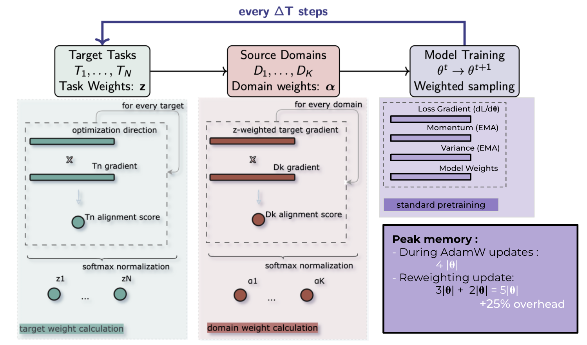
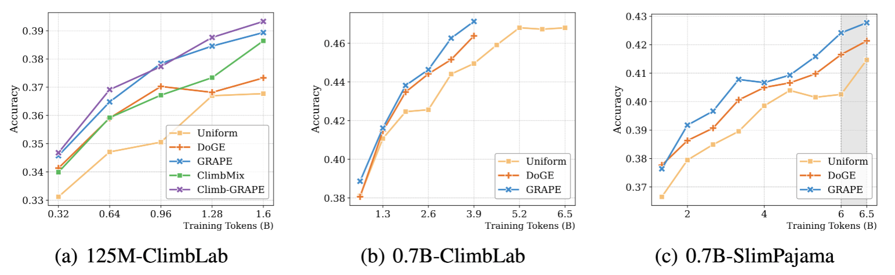
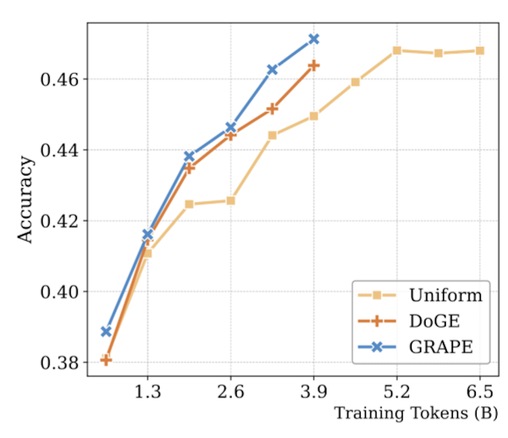
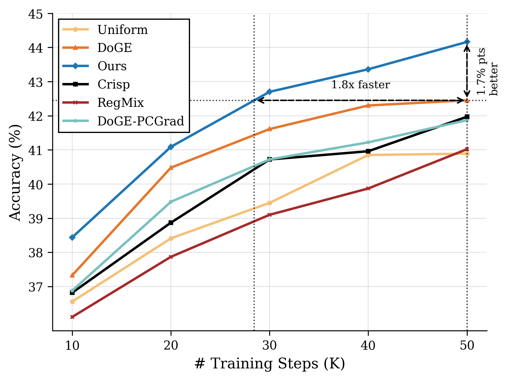
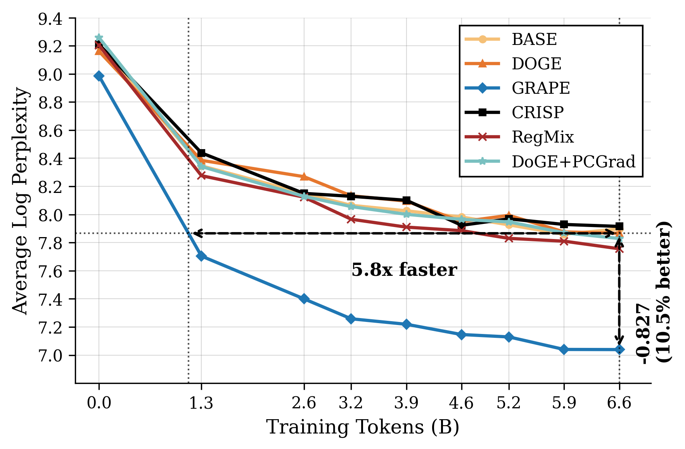
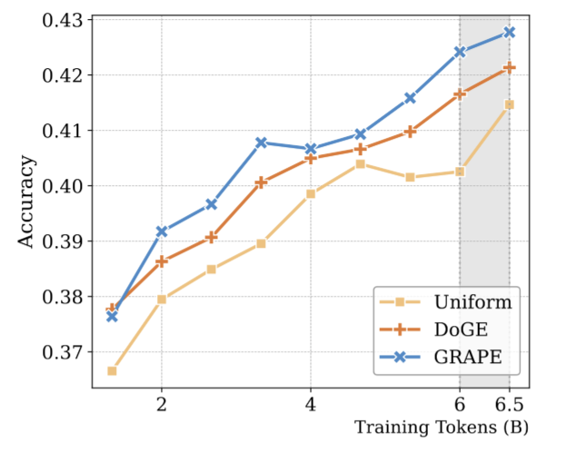

Problem & Challenges
Multi-task learning faces fundamental challenges that limit training efficiency and performance across diverse task domains.
- Gradient conflicts between tasks reduce overall training effectiveness
- Static data mixing fails to adapt to changing task requirements
- Fixed task weighting ignores dynamic learning patterns
- Inefficient resource allocation leads to suboptimal convergence
We introduce GRAPE, a gradient-based adaptive multi-task learning framework that periodically analyzes inter-task gradient interactions to detect conflicts, reweights task sampling accordingly, and curates data to support underperforming tasks. This targeted intervention improves convergence efficiency and delivers consistent performance gains across diverse task families.
- Conflict-aware analysis of inter-task gradients to reveal harmful interference
- Dynamic task reweighting that adapts sampling to current learning needs
- Data curation strategy selecting examples that accelerate lagging tasks
- Unified intervention cycle that integrates detection → reweighting → curation
- Extensive evaluation across multilingual, domain, and benchmark suites
GRAPE Methodology
GRAPE intervenes every 100 training steps with a three-phase adaptive process that dynamically optimizes multi-task learning through intelligent gradient analysis and data curation.
- Conflict Detection: Analyze gradient angles to identify opposing optimization directions.
- Dynamic Reweighting: Increase sampling probability for conflicting tasks.
- Data Curation: Select optimal training examples to support underperforming tasks.
- Signal: Compute pairwise gradient alignment and estimate conflict intensity.
- Policy: Map conflicts to task sampling weights with stability constraints.
- Curation: Prioritize informative samples that reduce conflicts and boost lagging tasks.
- Schedule: Apply the intervention periodically with low overhead.

Results & Impact
GRAPE achieves consistent improvements across multilingual, domain, and benchmark settings, with faster convergence and lower perplexity where applicable.
- Multilingual: Lower perplexity across languages compared to static mixing baselines.
- Benchmarks: Accuracy gains over strong baselines on CLIMB and SLIMPJ families.
- Stability: Reduced gradient conflict and more efficient token usage.





- Conflict-aware interventions yield better transfer and balanced gains.
- Adaptive sampling + curation reduces wasteful updates and accelerates training.
- Method generalizes across tasks without task-specific tuning.